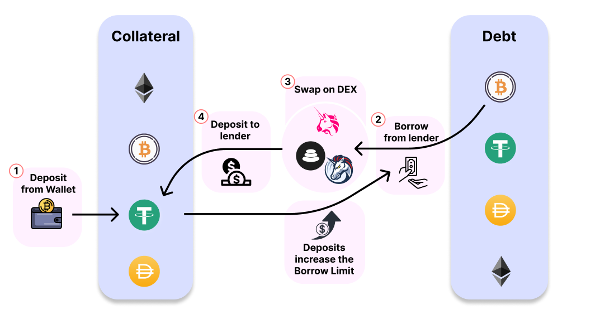
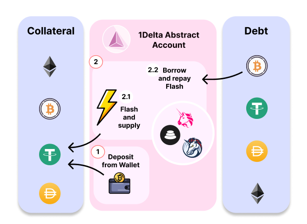

Introduction
1delta
Margin Aggregation
Architecture
Broker architecture
Abstract accounts
How Tos
Brokering
Abstract accounts
Contract API
Money Market
Borrow Swap
Collateral Swap
Open Margin Position
Close Margin Position
Published with HonKit
Margin Aggregation
Margin Trade Aggregation
Under "margin trade aggregation" we understand the process of
Margin Trading In DeFi

How 1delta automates the flow
